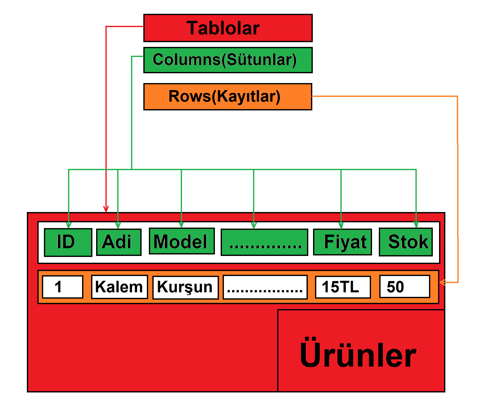
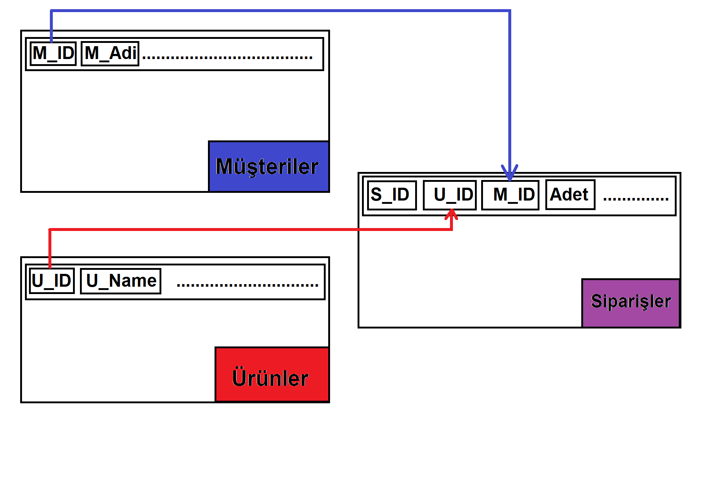
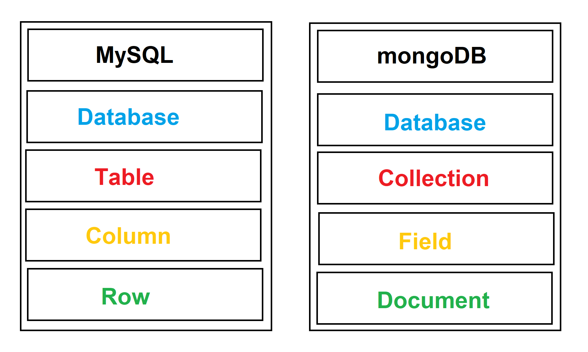

MySQL ve mongoDB üzerinden
SQL-noSQL karşılaştırması
noSQL nedir? Neden noSQL kullanılmalıdır?
noSQL ve SQL arasında ki farklar nelerdir? Avantajları ve dezavantajları nelerdir?
SQL vs noSQL (mongoDB vs MySQL)
Genel olarak MySQL ve mongoDB karşılaştırması üzerinden anlatmaya çalışacağım. ilk olarak hangisini seçmeniz gerektiğini anlamamız gerekiyor. Çünkü SQL ve noSQL aslında birbirinden ayrı dünyalar diyebiliriz. İsterseniz ayrı dünyalar demeyin fakat farklı teknolojiler olduğunu kesinlikle inkar edemeyiz.
SQL'den bahsederek başlayalım. SQL bir database(veritabanı) değildir. SQL Structured Query Language'ın kısaltılmasıdır. Yani Aslına baktığımızda SQL bizim database sorguları yapmamıza olanak sağlayan bir dildir.
Örnek olarak ;
SELECT
id, nameFROM
person
Tabii ki yaptığımız sorguyu yapılandırmak(eklemek, çıkarmak,saymak vb.) için bir çok komutu vardır. Burada verdiğim örnek sadece bir sorguyu nasıl oluşturduğumuzun bir örneğidir. Belirli anahtar kelimeleri ve belirli bir yazım kuralı vardır. Görüntülemek istediğimiz verileri yazmamız gerekir ve bu verilerin çekileceği tabloları bildirmemiz gerekir. Örnekte keyword leri mavi, görüntülenmek istenin verileri yeşil ve verilerin alınacağı tabloyu mor rengine boyadım. SQL verileri sadece görüntülemek ile sınırlandırılmış komutlara sahip değildir,bunların yanı sıra veri eklemek(INSERT), yeni tablolar oluşturmak(CREATE), verileri güncellemek(UPDATE) veya silmek(DELETE) gibi önem arz eden komutlarada sahiptir. Birbiri ile kombine edebileceğiniz ağaç yapısına benzeyen birbirleri ile bağlantılı komutlara sahiptir. SQL kelimesini gözümüzün önüne getirdiğimizde aslında arkasında yatan database'i düşünüyoruz, böylece veritabanını SQL olarak düşünüyoruz. Oysa ki yapılandırılmış bir sorgu dili olan SQL ile tipik olarak kullanılan ilişkisel ve bazı varsayımlar üzerine çalışan veritabanımıza erişim sağlıyoruz. Böyle bir veritabanı tabii ki ilişkisel tablolarla çalışır.
Bir mağaza için bir app yaptığımızı varsayarsak. Öncelikle yapıdan bahsedecek olursak yukarıda örnekte görüldüğü üzere kırmızı renki bölüm bizim
Ürünler
tablomuzdur. Tablolar bizim verileri tuttuğumuz(depoladığımız) bölümlerdir. Bu oluşturduğumuz tabloya istediğmiz gibi veri girişi tabii ki de sağlayamıyoruz. Bunun için girişi yapılacak verinin de kural, özellik ve niteliğini belirmemiz gerekmektedir. Bu işlemi resimde yeşil renkte gösterdiğim
Columns
(Sütunlar) yapmaktadır. Tablomuza girecek verilerin ne gibi bilgilere sahip olması gerektiğini bu kısımda belirlenir. Bizim tablomuzda
ID, Adi, Model, Fiyat, Stok
columns'ları(sütunları) örnek olarak belirlenmiştir. Bu columns'ların sayısı ve niteliği(tipi:int, varchar, date...)ihtiyaca göre belirlenebilir. Tabloda veriler ise turuncu renkte belirtildiği gibi
Rows
'lar(Kayıtlar, Satırlar) şeklinde tutulur. Bütün rows'lar columns'lar ile belirtilen kurallara uygun olmak zorundadır. Bu durumda SQL Database yapısının net ve keskin veri saklama ve görüntüleme kurallarına sahip olduğunu ortaya koyuyor. Bu da tabloya eklenecek olan her şeyin columns yapısında belirttiğimiz içerik ve şartlara sahip olması gerektiğini gösteriyor. Tabi kii SQL Database sadece bir tablo ile bitmiyor. Aslında SQL Database'imiz bu yapıya sahip tabloların bir araya getirilmesi ve ilişkilendirilmesi ile oluşuyor.
Örnek olarak yukarıda ilişkilendirilmiş tablonun en temel hali ile çizilmiş bir yapısal resmini koydum. ilk olarak bu tabloların anlattığım gibi tablolar SQL Database yapısına uygun bir şekilde oluşturulmalıdır. Tabloların bu şekilde oluşturulduğunu varsayalım. Bu resimde bizim için önemli olan mor renk ile belirttiğim
Siparişler
tablosudur. Görüldüğü üzere Siparişler tablosu kendisine ait columns'ların yanı sıra Ürünler ve Müşteriler tablolalarının da bazı columns'larını(M_ID, U_ID) da barındırmaktadır. Bu durumu basitçe açıklamak gerekirse senaryomuzda bir siparişin gerçekleşmesi için bir adet ürün ve bir adet müşteri gerekmektedir. Müşterinin kim olduğu(sipariş teslim adresi, iletişim bilgileri vb.) bilgisi müşteriler tablosunda tutulurken, müşteri sipariş verdiğinde sipariş tablosunda müşterinin bütün bilgileri olmamasına rağmen uniqe(eşsiz) bilgisi olan M_ID ile müşterinin bilgilerine ulaşılabilmektedir. Aynı durum ürünler içinde geçerlidir. Ürünler tablosunda bilgileri(Modeli, Markası, Fiyatı vb.) bulunan ürünlerin sadece U_ID bilgisine sahip olan siparişler tablosu ile ürünün bütün bilgilerine erişebilmekteyiz.
Bu konu incelenirken akla ilk gelen soru:"Neden bütün bilgileri tek tabloda tutmuyoruz?Neden müşteri tablosuna ihtiyaç duyuyoruz? Aslında Müşterinin bilgileri de siparişler tablosunda tutulabilir mi?"
Hayır, tek tabloda tutamayız. Tekrar bir senaryo düşünelim mağazamızın database'in de kayıtlı bir müşteri artık bilgilerini tutmamızı istemediğini söyledi. KVKK'ya(Kişisel Verilerin Korunması Kanunu) göre müşterinin bu isteği üzerine onun bilgilerini saklamamız yasal bir suç. Müşterinin bilgilerini sipariş tablosundan ayrı tutmadığımızı düşünürsek onun bilgilerini silmek demek kişinin yapmış olduğu siparişleri de silmek anlamına gelir. Satmış olduğunuz ürünlere dair verileri de silmek zorunda kalacaksınız anlamına gelir. Bu da ileriye dönük olarak hiçbir işletmenin istemediği bir durumdur.
Peki noSQL nedir? mongoDB nedir?
mongodb basitçe humongous(kocaman) kelimesinden kaynaklanmaktadır, çünkü çok fazla veriyi çok verimli bir şekilde depolamak için üretilmiştir. noSQL kelimesi ise sql değil gibi algılanabilmektedir, fakat asıl anlamı (not only sql) sadece ilişkisel değildir.
mongoDB'yi az önce incelemiş olduğumuz MySQL ile karşılaştırarak inceleyelim isterseniz.
Evet yukarıda görselde gördüğünüz gibi MySQL ve mongoDB arasında bazı farklılıklar var. Bu farklılıklar kullanılan teknoloji ve yöntem farklılığından ortaya çıkmaktadır. Bunları inceleyeck olursak yeşil renk ile belirtilen bölümde MySQL'de bulunan
Row
yerine
Document
(doküman) geldiğini görüyoruz. Bu farklılığın sebebi MySQL'in yerine mongoDB dosya halinde verileri saklamaktadır. Bu sayede çok daha büyük verileri daha kolay depolayıp, daha hızlı erişime açabilme kapasitesine sahiptir. Yine MySQL bulunan
Column
yerine
Field
(alan) bulunmakta. Bu kısımda en önemli noSQL farklarından birisi ortaya çıkıyor. MySQL Structured Data(yapılandırılmış veri) prensibi vardır. Bu sayede veriler
Column
'lar ile ayrılmış bölümlerde belirli yapıda olan veriler belirli bölümlere eklenir. mongoDB'de ise
Field
yapısı bize Unstructured Data(yapılandırılmamış veri) depolama yeteneği kazandırmaktadır. MySQL' bulunan
Table
'ın görevini ise mongoDB'de
Collection
(koleksiyon) üstlenmektedir. Bu iki veritabanının yapısal karşılaştırması bu şekildedir.mongoDB ile veriye nasıl erişiyoruz peki?
Örnek olarak;
db.koleksiyon
.
find
find();Yukarıda örnek bir veri listeleme komutu bulunmaktadır. Programlama bilgisi olanların aşina olduğu bir yapıdır. mongoDB'de verileri listelemek için
find
methodunu kullanıyoruz. mongoDB'de MySQL'de olduğu gibi veri ekleme(insert), veri silme(remove), veri güncelleme(update) methodları bulunmaktadır.
mongoDB'nin bize sağladığı imkanlardan birisi de MySQL'de olan ACID(Atomic Transactions) yoktur. ACID aslında Atomicity, Consistency, Isolation, Durability kelimelerinin baş harflerinin bir araya getirilmesidir. Peki nedir bu ACID ve mongoDB'de neden yoktur. Türkçesine baktığımızda Atomicity-Atomic, Consistency-Tutarlılık, Isolation-İzolasyon, Durability-Dayanıklılık. Bu durumu bir banka havalesi ile anlatmak en uygunu diye düşünüyorum. Örneğin Ali Mehmet'e 100 tl göndersin. Bu işlem gerçekleşirken Ali'nin hesabından 100 tl eksilir sonra Mehmet'in hesabına 100 tl eklenir. Bu işlem tamamlana kadar başka hiçbir işlem gerçekleşmez. Bir işlem tamamen biter ve ikinci işlem başlar. ACID'in olmaması mongoDB'ye nasıl bir katkı sağlıyor bunu da bir yazışma uygulaması üzerinden inceleyelim. Örneğin bir yazışma uygulaması üzerinden Ali ile Mehmet yazışıyorlar. Ali bir yazı yazarken aynı anda Mehmet'de Ali'ye yazabiliyor. Hatta Ali bir dosya gönderirken aynı zamanda yazmaya devam edebiliyor. Çünkü bu uygulamada işlemler birbirini beklemiyor yani birinci işlem sürerken(Ali'nin mesajı Mehmet'e iletilirken) ikinci işlem(Mehmet'in mesajı Ali'ye iletiliyor) başlayabiliyor. Hatta daha önce bitebiliyor. Bu özelliği sayesinde bir çok platformda(oyunlar, mobil uygulamalar, vb.) tercih edilyor.